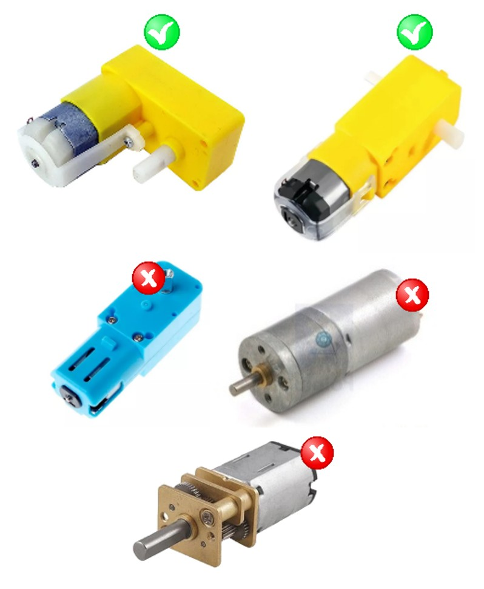
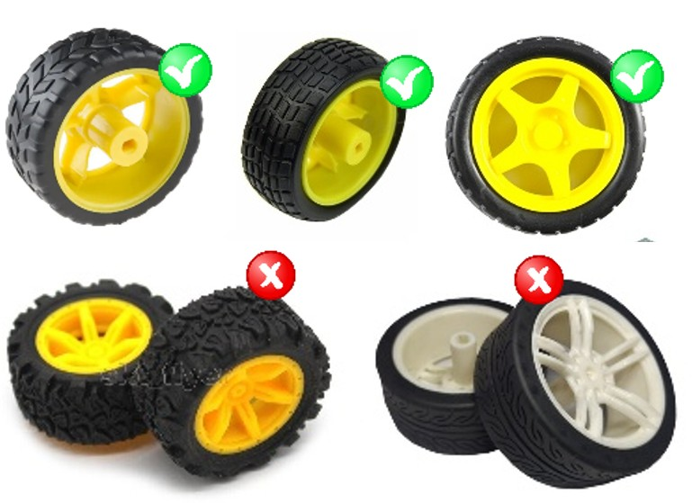
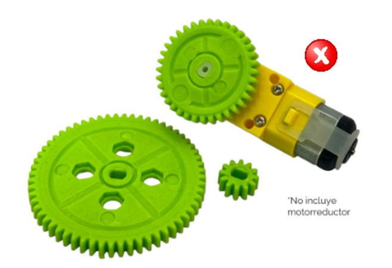
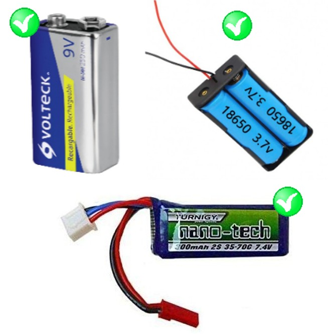
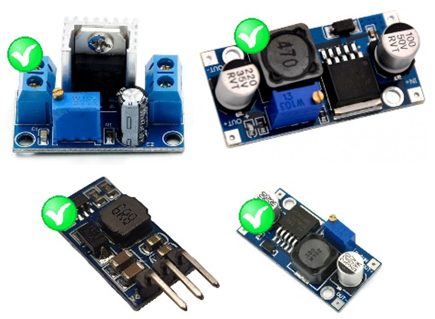
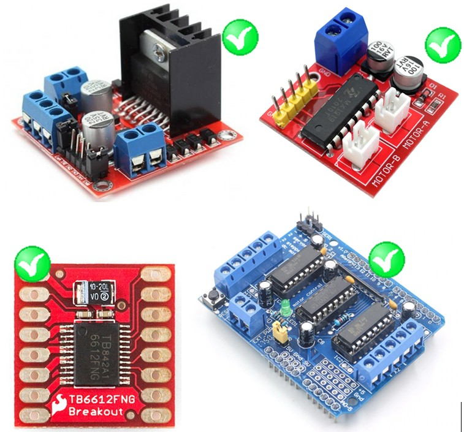
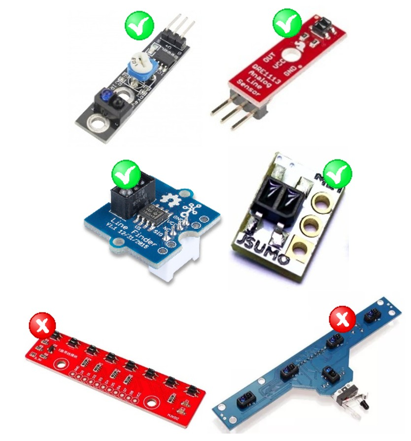

SEGUIDOR DE LÍNEA
CATEGORÍA AMATEUR | 2026
1. Definición de la Competencia
La competencia de Seguidores de Línea está dirigida a entusiastas, estudiantes de educación media y superior interesados en la robótica. El objetivo de la competencia es que los robots recorran un circuito predefinido en el menor tiempo posible, siguiendo una línea de referencia sin salirse de la pista.
Cada equipo debe estar compuesto por un máximo de tres integrantes y apegarse a las reglas establecidas.
1.1 Dimensiones y Peso
El robot debe ajustarse a los siguientes requisitos de construcción:
- Dimensiones máximas: 20 cm x 20 cm (sin límite de altura).
- Peso máximo: 500 g.
- Las dimensiones y peso serán estrictamente verificadas antes de competir.
- Uso máximo de cuatro sensores de línea.
- No se permite el uso de sustancias adhesivas o pegajosas que mejoren la tracción.
- Debe moverse de forma autónoma sin intervención humana una vez iniciada la carrera.
1.2 Medición del Tiempo
- El tiempo oficial inicia cuando el punto más adelantado del chasis del robot rebasa completamente la línea de salida.
- El tiempo oficial termina cuando el punto más adelantado del chasis rebasa completamente la línea de meta.
- Para que un intento sea válido, el robot debe recorrer el circuito siguiendo el trazado, sin atajos, y cruzar la meta por el carril correcto.
- Se considera cruce de salida/meta cuando el robot rebasa la línea; el contacto “toca la línea” no es criterio suficiente si el chasis no la rebasa.
- Se usarán los dispositivos de medición mostrados en la Figura 1 para registrar los tiempos del recorrido. La altura de referencia del sensor reflectivo del sistema es de 2.5 cm.
1.3 Límite de Tiempo
- El tiempo máximo para completar el recorrido es de 3 minutos por intento.
- Si el robot no completa el recorrido dentro del tiempo máximo, el intento se registra como DNF (No Finaliza) y no genera tiempo válido.
- Un intento DNF cuenta como intento realizado para efectos de la clasificación.
1.4. Cronometraje
- El cronometraje oficial será mediante sistema electrónico (Figura 1).
- En caso de falla comprobable del sistema electrónico (por ejemplo: no detección en salida o meta, reinicio del sistema o registro incompleto), el juez podrá:
- Repetir el intento una (1) sola vez, o
- Registrar el tiempo mediante cronómetro manual operado por un juez, según disponibilidad técnica.
- La clasificación final será determinada por el mejor tiempo válido (menor) obtenido por cada robot.
- Desempates: Si dos o más robots obtienen el mismo mejor tiempo, el desempate se realizará en este orden:
- Mejor segundo tiempo válido (si existe),
- Menor número de DNFs durante la clasificación,
- Intento adicional de desempate (un intento por robot), si el comité lo considera necesario.
1.5. Autonomía
- El robot deberá funcionar en modo autónomo desde el momento en que cruce la línea de salida.
- Se permite calibración y ajustes únicamente antes de iniciar el intento (antes de cruzar la salida). Una vez iniciado el intento, queda prohibida cualquier intervención.
- Queda prohibido tocar el robot durante un intento. Si el equipo toca el robot, el intento se registra como DNF.
- Se considera “salida de pista” cuando cualquier parte del robot rebasa el borde exterior del tablero/segmento de la pista. La salida de pista se registra como DNF.
- Si el robot pierde completamente la línea y no la recupera en un lapso razonable, el juez podrá detener el intento por seguridad y registrarlo como DNF. Desarrollo de la competencia
1.6. Desarrollo de la competencia
- La etapa de clasificación tendrá una duración total de 180 minutos, divididos en dos fases:
- Primera fase (90 minutos): Cada robot deberá realizar al menos 1 intento obligatorio y podrá realizar hasta un máximo de 2 intentos adicionales (máximo 3 intentos en esta fase).
- Segunda fase (90 minutos): Los robots podrán realizar intentos adicionales para mejorar su mejor tiempo, sujetos al orden de fila y disponibilidad de la pista. Después de cada intento, el equipo regresa al final de la fila. El juez podrá limitar intentos adicionales si el flujo de competencia lo requiere para garantizar participación equitativa.
- Un intento se considera oficial cuando el robot cruza la línea de salida.
- Al finalizar la clasificación, se tomará en cuenta únicamente el mejor tiempo válido logrado por cada robot.
⚠️ Nota: Queda prohibido el uso de flash fotográfico o fuentes de luz infrarroja externas por parte del público o equipos durante un recorrido oficial, ya que pueden saturar los sensores.
1.7. Etapa eliminatoria
- La etapa eliminatoria se realizará únicamente si existen al menos 4 robots con tiempo válido en la clasificación.
- Acceden a eliminatoria los 8 mejores robots con tiempo válido. Si hay menos de 8, acceden todos los robots con tiempo válido.
- La eliminatoria se correrá por llaves con sembrado según clasificación (1 vs 8, 2 vs 7, 3 vs 6, 4 vs 5).
- Cada enfrentamiento consiste en 1 intento cronometrado por robot (en el mismo circuito). Gana el robot con menor tiempo válido.
- Si un robot obtiene DNF en su intento, pierde el enfrentamiento. Si ambos obtienen DNF, avanza el mejor clasificado en la fase de clasificación. Si persiste controversia, el juez podrá ordenar un intento adicional por robot.
- Si solo 3 (o menos) robots obtienen tiempo válido en la clasificación, la clasificación final será por mejores tiempos y no habrá eliminatoria.
2. Requisitos para los Robots
El objetivo de esta categoría es fomentar el ingenio, la calidad de la programación y la eficiencia del diseño utilizando hardware estandarizado. Para garantizar la equidad deportiva, todos los robots deben apegarse estrictamente a las especificaciones de construcción y seguridad aquí descritas. Se considera una violación al espíritu de la competencia cualquier intento de ocultar modificaciones prohibidas en los componentes homologados (motores y ruedas) o el uso de dispositivos que dañen la pista. Es responsabilidad de cada equipo asegurar que su robot cumpla con estas normas antes de presentarse a la mesa de homologación.
2.1. Especificaciones Generales del Robot
- El robot debe ser completamente autónomo y no puede recibir instrucciones externas durante la carrera.
- Se permite el uso de hasta dos motorreductores (TT) comerciales sin modificaciones internas
- Se permite el uso únicamente de ruedas de plástico genéricas (rin amarillo), no se permite el uso de llantas de goma, llantas modificadas o con sustancias pegajosas.
- No se establece un límite reglamentario de voltaje. Sin embargo, debido a que los motorreductores TT comerciales operan típicamente en rangos de 3V a 6V (tolerando hasta 12V máx.), es responsabilidad exclusiva del equipo gestionar la alimentación para preservar la integridad de sus motores y garantizar la seguridad operativa durante el evento.
- Se permite un máximo de cuatro sensores de línea.
2.2. Restricciones del Robot
Para asegurar una competencia más equitativa, el uso de ciertos componentes del robot estará limitado a los módulos y dispositivos especificados en la Tabla 2. Además de las siguientes restricciones.
- Interferencia Inalámbrica: No se permite el uso de sistemas de comunicación inalámbrica.
- Mecanismos Prohibidos: No se permiten dispositivos que levanten o alteren la pista.
- Pegamentos y Sustancias Adherentes: Queda prohibido el uso de materiales que puedan mejorar artificialmente la tracción del robot.
- Interruptor de Apagado: Cada robot debe contar con un interruptor visible para detenerlo en caso de emergencia.
Tabla de Componentes Permitidos
| Componente | Regla / Observación | Ejemplo |
|---|---|---|
| Motores |
|
|
|  | ||
| Ruedas o tracks |
|
 |
| Ejes o transmisiones |
|
 |
| Baterías |
|
 |
| Reguladores de voltaje |
|
 |
| Drivers de Motores |
|
 |
| Sensores de Línea |
|
 |
| Chasis |
|

|
 [cite_start]Ejemplos de módulos electrónicos y baterías permitidos [cite: 162]
[cite_start]Ejemplos de módulos electrónicos y baterías permitidos [cite: 162]
3. Requisitos para la Pista
[cite_start]La pista mide 1.20 m de ancho por 2.40 m de largo[cite: 230]. Fondo negro mate y línea blanca mate de aprox. [cite_start]19 mm[cite: 231, 232].
3.2 Construcción y Materiales
La pista se compone de segmentos modulares. [cite_start]Es vital respetar las uniones para garantizar la continuidad[cite: 250].
Pintura Oficial: Se utiliza esmalte alquidálico industrial marca Sayer: Negro Mate (EX-1100.30) y Blanco Mate (EX-1200.30)[cite: 277].
4. Homologación y Controversias
Antes de competir, cada robot pasará por una mesa de homologación para verificar:
-
[cite_start]
- Tamaño (Caja de 20x20 cm)[cite: 292]. [cite_start]
- Peso (Máx 500g)[cite: 293]. [cite_start]
- Cantidad de sensores y tipo de ruedas[cite: 294].
Las decisiones del juez principal son definitivas. [cite_start]Solo el capitán del equipo puede presentar aclaraciones en la mesa de controversias dentro de los 5 minutos posteriores a su intento[cite: 296, 298].
6. Contacto
[cite_start]Para dudas técnicas o de logística[cite: 305]:
-
[cite_start]
- Responsable de Categoría: M. en P. Brenda Rivas Fernández (brenda.rf@regionllanos.tecnm.mx)[cite: 311].
- Coordinador General: M.C. [cite_start]Osbaldo Aragón Banderas (osbaldo.ab@regionllanos.tecnm.mx)[cite: 311].